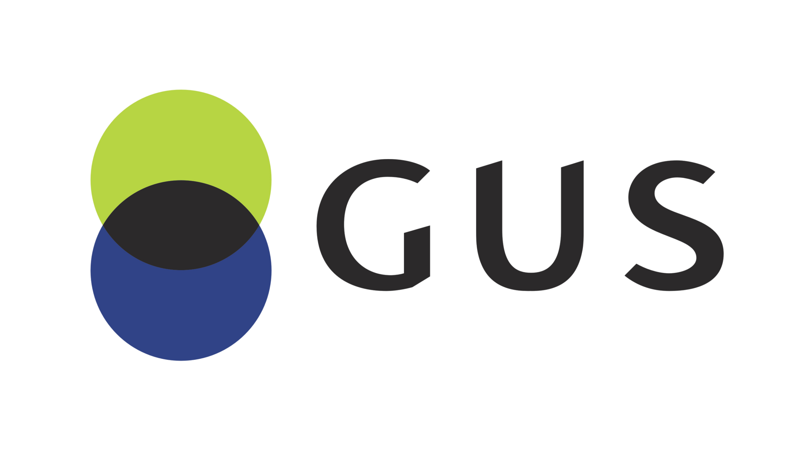
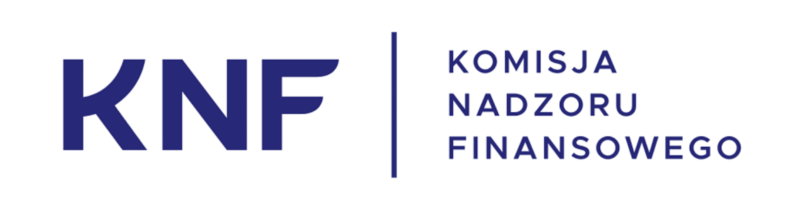
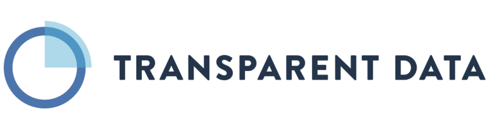
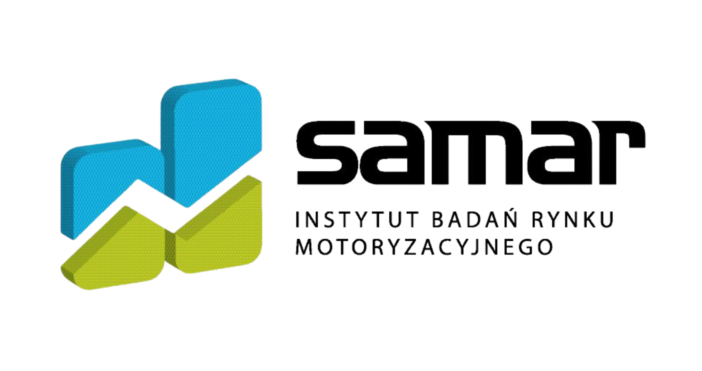
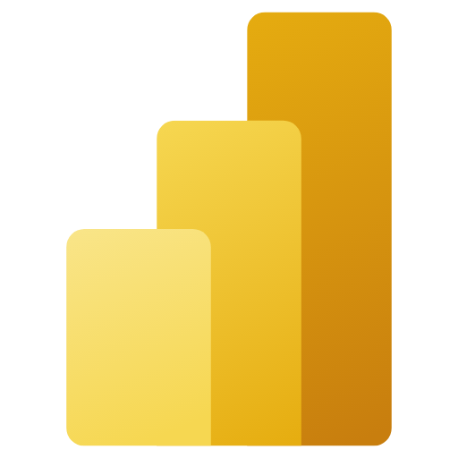
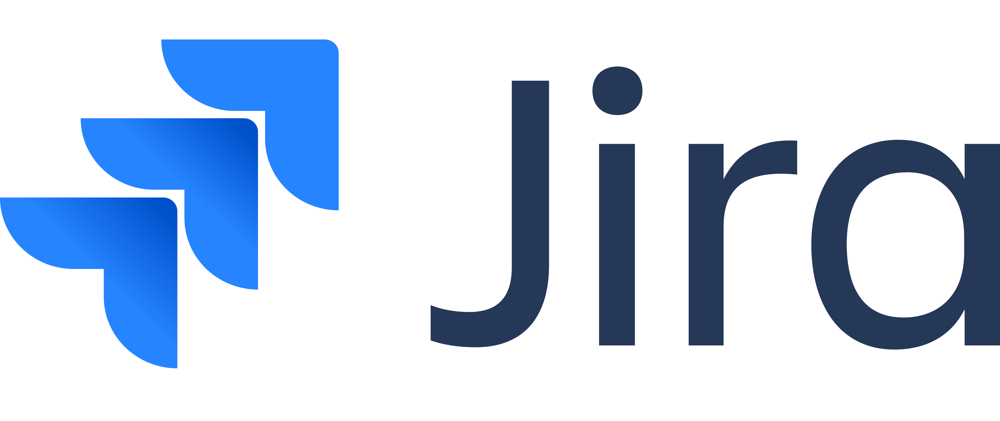

O ERGO Hestii
Od ponad 30 lat kształtujemy rynek ubezpieczeń w Polsce, będąc pionierem wdrożeń technologicznych i cyfrowych. Jako Grupa ERGO Hestia zabezpieczamy przyszłość milionów klientów indywidualnych oraz największych korporacji. Nasza centrala w Sopocie to miejsce, gdzie stabilność międzynarodowej grupy finansowej łączy się z dynamiczną kulturą innowacji i ciągłego testowania nowych rozwiązań.
ERGO Hestia w liczbach:
- 3. największe towarzystwo ubezpieczeń majątkowych w Polsce
- 16% udziału w rynku
- 34 lata na rynku ubezpieczeniowym
- >3 mln klientów w każdym roku
- 9,6 mld zł składki przypisanej w 2024 r.
- 7,5 mln sprzedanych polis w 2024 r.
O Biurze Pricingu
Jesteśmy sercem analitycznym firmy. Nasz zespół to unikalne połączenie kompetencji biznesowych, wiedzy aktuarialnej oraz zaawansowanego Data Science. Nie tylko analizujemy suche dane – my nadajemy im sens i przekształcamy je w realne strategie cenowe. Pracujemy ściśle współpracując z product ownerami, co daje nam bezpośredni i natychmiastowy wpływ na wynik biznesowy firmy.
Zespół Pricingu ERGO Hestii istnieje od 2017 roku i liczy 44 specjalistów z następujących dziedzin:
- 24 osoby – budowa modeli predykcyjnych
- 12 osób – analizy biznesowe i monitoring wyników
- 5 osób – programowanie algorytmów taryfikacyjnych
- 3 osoby – inżynieria danych
Kto u nas pracuje i kogo szukamy?
Tworzymy zgrany zespół ekspertów – analityków, data scientistów i aktuariuszy, dla których praca z danymi to prawdziwa pasja. Cenimy otwartą komunikację, dzielenie się wiedzą i partnerskie podejście do rozwiązywania problemów biznesowych. Dołączając do nas, staniesz się częścią środowiska, które wspiera innowacje. Szukamy osób, które idealnie dopełnią ten zespół!
Umiejętności twarde (Tech & Data)
- Bardzo dobra znajomość języka Python lub R oraz środowiska SQL.
- Doświadczenie w pracy z dużymi zbiorami danych (mile widziane środowisko Spark/Databricks).
- Doświadczenie w pracy w narzędziach do modelowania i zarządzania taryfą ubezpieczeniową klasy Earnix.
- Zrozumienie zagadnień statystycznych, ekonometrycznych oraz modeli Machine Learning (GLM, drzewa decyzyjne, XGBoost).
- Umiejętność rozwoju kodu w ramach zespołu z wersjonowaniem przy użyciu gita.
- Wykształcenie wyższe o profilu ścisłym (Metody Ilościowe, Matematyka, Informatyka, Ekonometria, Aktuariat lub pokrewne).
Kompetencje miękkie & Biznes
- Nastawienie na biznes: Umiejętność przekładania skomplikowanych modeli matematycznych na język korzyści biznesowych.
- Dociekliwość i pasja: Chęć ciągłego szukania zależności w danych i testowania niestandardowych hipotez, a także dążenie do ciągłego poprawiania wyników.
- Praca zespołowa: Świetna komunikacja wewnątrz zespołu i otwartość na wymianę wiedzy.
Czym się zajmujemy?
Zewnętrzne źródła danych




Nasz Tech Stack
 Azure Databricks
Przetwarzanie danych
Azure Databricks
Przetwarzanie danych
 Python / PySpark
Modelowanie i algorytmy
Python / PySpark
Modelowanie i algorytmy
 R
Analizy statystyczne
R
Analizy statystyczne
 SQL
Zarządzanie bazami danych
SQL
Zarządzanie bazami danych
 Git
Kontrola wersji
Git
Kontrola wersji

Power BI Wizualizacja i raportowanie
Jira Zarządzanie projektami i ScrumCo oferujemy?

Umowa o pracę (KUP 50%)
Oferujemy stabilne zatrudnienie zawierające korzystne podatkowo zapisy, uwzględniające autorskie koszty uzyskania przychodu.

Szkolenia i warsztaty
Inwestujemy w Twój rozwój. Oferujemy dostęp do nowoczesnych platform edukacyjnych oraz autorskich programów, takich jak nasza wewnętrzna Upskill Academy.

Elastyczna praca hybrydowa
Łączymy swobodę pracy z domu z obecnością w biurze dopasowaną do potrzeb Twoich i zespołu.
Bliskość morza
Nasze biuro mieści się tuż przy plaży w Sopocie – idealne miejsce na krótki spacer lub reset po pracy.

Karta MultiSport
Dostęp do tysięcy obiektów sportowych (nie tylko w Polsce), by dbać o kondycję fizyczną.
Darmowe obiady dla rowerzystów
Wybierasz proekologiczny dojazd rowerem? ERGO Hestia funduje pożywny posiłek w naszej kantynie.

Marina Zdrowie
Kompleksowy, prywatny pakiet opieki medycznej dla Ciebie i Twoich bliskich.
Eventy integracyjne
Cykliczne spotkania zespołowe, wyjścia integracyjne oraz duże imprezy firmowe.
Młody zespół
Praca w dynamicznym, ambitnym środowisku bez sztywnej hierarchii i zbędnych procedur.
"Godziny dla rodziny"
Dodatkowe płatne godziny wolne od pracy, które możesz w pełni przeznaczyć dla swoich najbliższych.
Oferty pracy
Specjalista / Specjalistka ds. Inżynierii Danych
📍 Sopot (Hybrydowo)
Pokaż szczegóły ogłoszenia
Twój zakres obowiązków:
- projektowanie, wdrażanie i testowanie oprogramowania opartych o Python, obsługujących procesy taryfikacyjne
- udział w opracowywaniu koncepcji oraz planowaniu nowych modułów, funkcjonalności i aplikacji
- optymalizowanie rozwiązań pod kątem wydajności i możliwości przetwarzania dużych zbiorów danych
- projektowanie zadań ETL (tryb batch'owy oraz czas rzeczywisty np. Kafka, Flink)
- tworzenie kodu zgodnie ze standardami rynkowymi i wewnętrznymi
- kontrola i podnoszenie jakości danych w Biurze Pricingu
Nasze wymagania:
- znajomość języków SQL, Python i PySpark
- doświadczenie w tworzeniu rozwiązań IT z zakresu pricingu
- doświadczenie w pracy z rozwiązaniami Big Data oraz API REST
- wiedza z zakresu baz relacyjnych i nierelacyjnych
- znajomość zasad przetwarzania i analizy dużych zbiorów danych
- język angielski: min. B2 oraz swobodne czytanie dokumentacji
- umiejętność dobrej komunikacji i chęć poszerzania wiedzy
- Mile widziane: znajomość GitLab oraz Azure DevOps (zarządzanie kodem, CI/CD)
Nie znalazłeś oferty dla siebie?
Jeśli nie prowadzimy w tej chwili rekrutacji na stanowisko, które odpowiada Twoim umiejętnościom, ale masz kompetencje, których potrzebujemy i chcesz u nas pracować – daj nam znać!
Wyślij swoje CV, a odezwiemy się, gdy tylko będziemy mieli możliwość Cię zatrudnić.
Jak wygląda rekrutacja?
Analiza aplikacji (CV)
Dokładnie sprawdzamy Twoje doświadczenie pod kątem wymagań na danym stanowisku, w szczególności umiejętności technicznych i analitycznych.
Krótka rozmowa telefoniczna
Kontakt ze strony HR w celu poinformowania o przyjęciu do rekrutacji i ewentualnie doprecyzowania szczegółów.
Test analityczny
30-minutowy test weryfikujący Twoje zdolności analityczne.
Rozmowa z przyszłym przełożonym
Spotkanie, zwykle online, z rekruterem i przyszłym przełożonym. Na tym spotkaniu będziesz mieć okazję opowiedzieć bardziej szczegółowo o swoim doświadczeniu zawodowym oraz o tym w jakim kierunku chcesz się rozwijać. My przedstawimy Ci pracę w naszym zespole i odpowiemy na pojawiające się pytania.
Zadanie do wykonania
Przy rekrutacji na wybrane stanowiska po rozmowie dajemy jeszcze zadanie do wykonania, aby upewnić się, że faktycznie umiesz robić to o czym zapewniałeś w CV i podczas rozmowy. Omówienie wyników odbywa się na kolejnym spotkaniu, zwykle już w formie stacjonarnej.
Witamy na pokładzie!
Składamy oficjalną ofertę i wspólnie planujemy Twój spersonalizowany proces onboardingu.
Często zadawane pytania
Czy wymagane jest wcześniejsze doświadczenie w ubezpieczeniach?
To zależy od konkretnej rekrutacji, szczegółowe wymagania są opisane w ogłoszeniu. W niektórych przypadkach doświadczenie w ubezpieczeniach nie jest wymagane, a czasami zależy nam na zatrudnieniu osoby z doświadczeniem w pricingu ubezpieczeniowym. Nawet jeśli nie spełniasz wszystkich wymagań, ale czujesz że Twoje doświadczenie i umiejętności są dla nas wartościowe, to zaaplikuj na interesujące Cię ogłoszenie.
Czy jesteście otwarci na pracowników spoza Trójmiasta?
Dla osób z Warszawy lub innych lokalizacji z dala od Trójmiasta oferujemy pracę zdalną z przyjazdem do biura raz w miesiącu na kilka dni w ramach delegacji (najszybszy pociąg jedzie z Warszawy Wschodniej około 2h 30min). Osoby pracujące w takiej formule cenią sobie położenie naszego biura tuż przy plaży, dzięki czemu delegację można połączyć z wypoczynkiem. Jeśli wolisz pracę w biurze ze współpracownikami i jesteś gotów przeprowadzić się do Trójmiasta to oferujemy dofinansowanie do wynajmu mieszkania przez pierwsze pół roku.
Na czym polega zadanie rekrutacyjne i ile mam na nie czasu?
Przy rekrutacji na stanowisko związane z modelowaniem w celu weryfikacji Twoich umiejętności dajemy zadanie, które dotyczy szeroko rozumianych analizy danych i modelowania na dostarczonym przez nas zbiorze. Efektem pracy nad zadaniem powinien być kod (zwykle w pythonie lub R) i analiza uzyskanych wyników. Na wykonanie zadania dajemy od tygodnia do dwóch, dopasowując termin do Twoich innych obowiązków.
Jak dokładnie działa umowa o pracę z kosztami autorskimi (KUP 50%)?
Standardowo przy umowie o pracę stosuje się koszty w wysokości 250 zł miesięcznie - jest to kwota pomniejszająca kwotę do opodatkowania. Korzystamy z tego, że prawo dopuszcza stosowanie wyższych kosztów dla pracowników, którzy tworzą utwory i przekazują prawa autorskie na rzecz pracodawcy. W naszym przypadku utworami mogą być kod w dowolnym języku programowania, przeprowadzona analiza czy stworzony model, jeżeli tylko dany utwór jest efektem pracy człowieka i posiada indywidualny charakter.
Utwory zgłaszamy w każdym miesiącu (przynajmniej jeden na miesiąc) i skutkuje to stosowaniem wyższych kosztów przy obliczaniu podatku. Ze względu na progresywne podatki im wyższa pensja brutto, tym większa korzyść z mechanizmu KUP 50%.
Jeśli chcesz oszacować pensję brutto dla oczekiwanej przez Ciebie pensji netto (lub odwrotnie, oszacować netto dla pensji brutto) możesz skorzystać z kalkulatora bankiera. W zależności od stanowiska stosujemy podwyższone koszty dla 70%-80% pensji i maksymalnie tyle powinieneś wpisać w kalkulatorze.
Czy muszę znać platformę Earnix i Azure Databricks przed dołączeniem do zespołu?
Znajomość używanych przez nas narzędzi ułatwia wdrożenie nowego pracownika, ale nie jest niezbędnym warunkiem do zatrudnienia. Jeśli znasz inny software do modelowania, inny silnik taryfikacyjny lub inne bazy danych, to na pewno szybko przyzwyczaisz się do naszych rozwiązań.